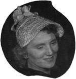
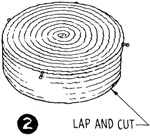
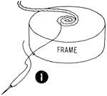
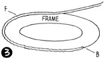
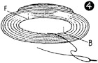

1952—How to Make Hats
by Ruby Carnahan
Using a Buckram Frame as a Block for a Straw Braid Hat Making Crown and Brim Separate
Any style frame may be used as a block to shape straw braid. The braid is basted to the frame and steamed. The rows of braid are then sewn together. Care must be taken not to sew braid to frame. Basting threads are cut and removed and braid is sized and allowed to dry on frame. Finished braid hat is then removed from frame.
MATERIAL REQUIRED
- Buckram frame.
- 8 to 10 yards of 1" straw braid.
Wrap straw braid in damp towel for several hours before using.
MARKING FRAME
When crown and brim are to be made separately, mark back, front and sides at bottom of frame crown with a colored thread. Also mark frame brim at headsize edge to match marking on crown. Then separate crown from brim.
MAKING STRAW CROWN
Wind thread around one end of straw and manipulate straw into a circle, slightly lapping one row of straw over the other. (Illus. 1) Sew two rows into circle and without cutting straw off baste this circle on top of crown. Continue basting each .row of braid to frame until top of crown is covered, then slightly pull braid and continue, basting braid to side crown, until bottom of crown is reached. Run last row of braid off on a slant and cut braid off (Illus. 2). Steam straw crown slightly over tea-kettle and sew rows of braid together, using small stitches concealed in the straw, be careful not to sew through braid to frame. Clip and remove all basting threads, except at bottom of crown. Apply a coat of straw sizing and allow to dry. Mark bottom of straw crown to correspond with markings on frame. Remove basting threads at bottom of crown and slip straw crown off frame.
MAKING STRAW BRIM
(Illus. 3) Start in back on brim edge and baste straw braid to frame, slightly pulling and lapping each row, until headsize is reached. Turn braid up around headsize 1/2" run braid off on a slant and cut off.
Steam brim over teakettle and sew rows of braid together, using small stitches concealed in the straw. Mark straw brim at headsize to correspond with markings on frame brim. Cut and remove basting threads, except around brim edge. Apply straw sizing and let dry. Remove bastings on brim edge and slip straw brim off frame.
WIRING BRIM EDGE
Measure a wire to fit brim edge and join with a wire joiner. Pin wire around brim edge on under side, and sew wire to straw. Start in back and fit a row of braid over wire on under side of brim, turn end under and lap braid. Sew row of braid around under side of brim edge. Apply a coat of straw sizing and let dry.
SEWING CROWN AND BRIM TOGETHER
(Illus. 4) Match markings on crown and brim. Pin together and sew crown to brim around headsize. Finish headsize with a swirled headband ribbon.
Instructions for swirled headband on page 45.